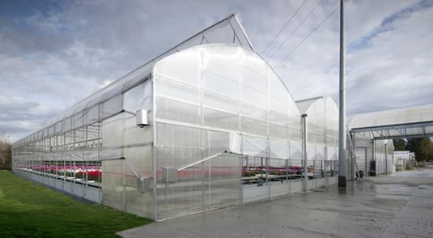

The electricity produced by waste heat is not new, however Climeon's technology faces the challenges that traditional technology faces in an innovative,
truly ingenious way. The question is whether they can perform, if the price / timing is right and if those in the relevant industries realize that this
technology works and why it excels where others fail. https://climeon.com/

Golden Berry greenhouse cultivation.It will also be one of the oldest professions in human history, but agriculture knows no brakes on modernization.
When we talk about innovative agriculture, in fact, there is a huge chapter made up of brilliant ideas, of entrepreneurial ideas that combine a
deep knowledge of the subject with a new vision of the sector. Today we want to participate to solve these defects and make cultivation excellent
in its productive period, which is why the alkekengi greenhouse project was born.

LIFESTYLE
The harmony of country life.
Find out More
The harmony of country life
LIVING IN HARMONY WITH THE FORCES OF NATURE.
A House, with the four elements of fire, water, earth and air as themes that can be experienced with all the senses:
this is the only four-element house.